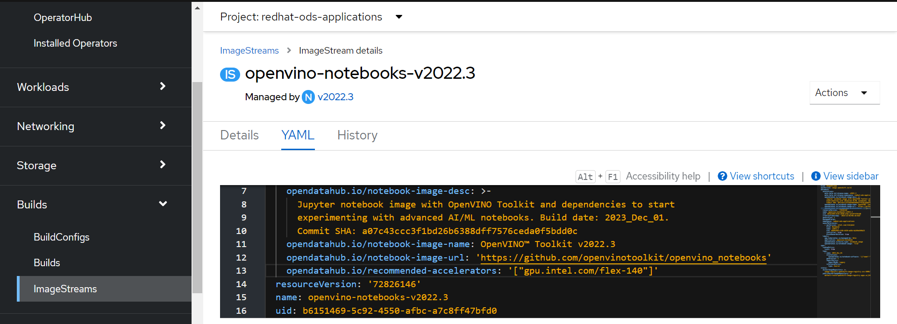
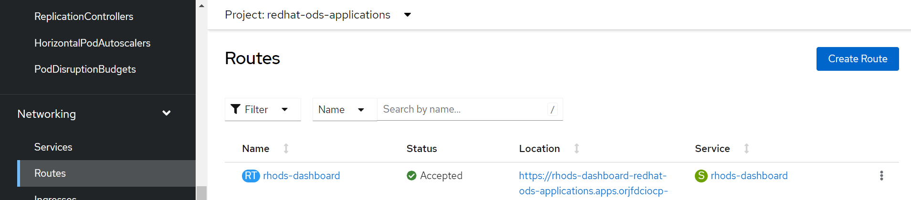
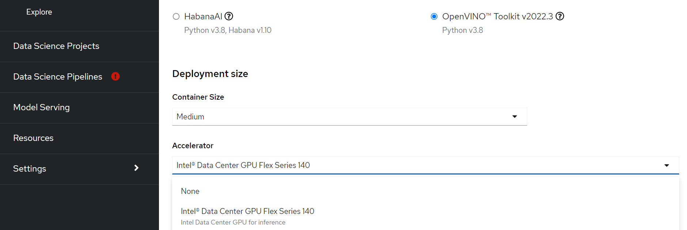
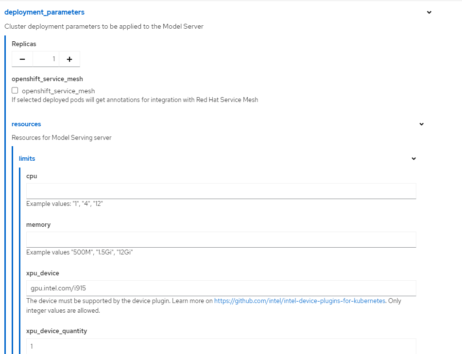
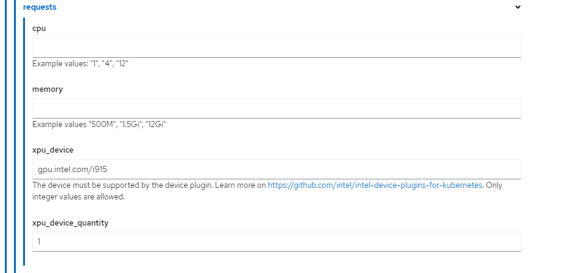

Intel AI Inference End-to-End Solution
Overview
Intel AI inference end-to-end solution with RHOCP is based on the Intel® Data Center GPU Flex Series provisioning, Intel® OpenVINO™, and Red Hat OpenShift AI (RHOAI) on RHOCP. There are two AI inference modes verified with Intel® Xeon® processors and Intel Data Center GPU Flex Series with RHOCP.
Interactive mode – RHOAI provides OpenVINO based Jupyter Notebooks for users to interactively debug the inference applications or optimize the models on RHOCP using data center GPU cards or Intel Xeon processors.
Deployment mode – OpenVINO Model Sever (OVMS) can be used to deploy the inference workloads in data center and edge computing environments on RHOCP.
Prerequisites
Install RHOAI
The Red Hat certified RHOAI operator is published at Red Hat Ecosystem Catalog. You can use the command line interface (CLI) or web console to install it.
Install using CLI (To be added)
Install using Web Console
On the RHOCP web console, click Operators → OperatorHub.
Search RedHat OpenShift AI Operator and click Install. The operator is installed in the namespace
redhat-ods-operator.
Verification
Navigate to Operators → Installed Operators page.
Ensure that in the redhat-ods-operator namespace, RedHat OpenShift AI status is InstallSucceeded
Click on
Search->Routes->rhods-dashboardfrom the web console and access the RHOAI UI link.
Note: When installing the operator, the defaultkfdefCustom Resource (CR) is created. This CR enables the dashboard for users to browse and launch Jupyter Notebooks projects on an RHOCP cluster. Please refer to this link for more details aboutkfdef.
Install OpenVINO Operator
The OpenVINO operator is published at Red Hat Ecosystem Catalog. You can use the CLI or web console to install it.
Install using CLI (To be added)
Install using Web Console
Follow this link to install the operator via the web console.
Work with Interactive Mode
To enable the interactive mode, the OpenVINO notebook CR needs to be created and integrated with RHOAI.
Click on the
create Notebookoption from the web console and follow these steps to create the notebook CR.Enable Intel Data Center GPU on RHOAI Dashboard- Technical Preview feature
Create AcceleratorProfile in the redhat-ods-applications namespace
$ oc apply -f https://raw.githubusercontent.com/intel/intel-technology-enabling-for-openshift/v1.4.0/e2e/inference/accelerator_profile_flex140.yaml
Navigate to
openvino-notebooksImageStream and add the above createdAcceleratorProfilekey to the annotation field, as shown in the image below:

Navigate to
Search->Networking->Routesfrom the web console and accessrhods-dashboardroute in theredhat-ods-applicationsnamespace, as in the image below. Click on the location link to launch RHOAI dashboard.

If step 2 is successful,
Intel® Data Center GPU Flex Series 140is shown in the accelerator dropdown menu inrhods-dashboard. Users can run OpenVINO notebook image with Intel® Data Center GPU Flex Series 140 card.

Follow the link for more details on the available Jupyter Notebooks.
Work with Deployment Mode
From the web console, click on the ModelServer option in this link and follow the steps to start the OVMS instance.
To enable the Intel Data Center GPU, make sure to modify the OVMS instance options according to the screenshot below.
Below images show
gpu.intel.com/i915resource requests and limits for OVMS


Enable Intel Gaudi AI Accelerator with RHOAI
From web console:
To enable and use the Intel Gaudi accelerator on RHOAI web console, follow the documentation.
From cli:
Deploy the
accelerator_profile_gaudi.yamlin the redhat-ods-applications namespace.
$ oc apply -f https://raw.githubusercontent.com/intel/intel-technology-enabling-for-openshift/v1.4.0/e2e/inference/accelerator_profile_gaudi.yaml